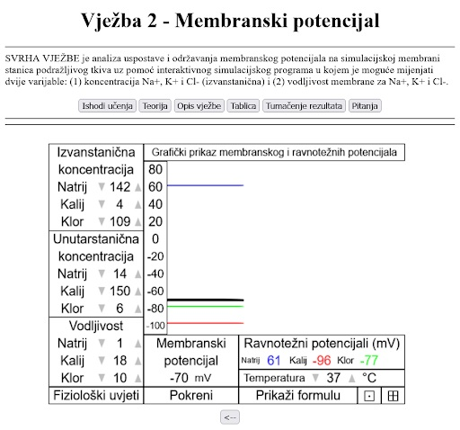

SVRHA VJEŽBE je analiza uspostave i održavanja membranskog potencijala na simulacijskoj membrani stanica podražljivog tkiva uz pomoć interaktivnog simulacijskog programa u kojem je moguće mijenjati dvije varijable: (1) koncentracija Na⁺, K⁺ i Cl⁻ (izvanstanična) i (2) vodljivost membrane za Na⁺, K⁺ i Cl⁻.
PURPOSE OF THE EXERCISE: to analyse how the membrane potential of excitable cells is established and maintained on a simulated membrane, using an interactive program in which two variables can be changed: (1) the extracellular concentrations of Na⁺, K⁺ and Cl⁻, and (2) the membrane conductance for Na⁺, K⁺ and Cl⁻.
Potencijal mirovanja (≈ −70 mV) nastaje jer je membrana u mirovanju najpropusnija za K⁺, a Na⁺/K⁺-crpka održava gradijente.
Koncentracije određuju ravnotežne potencijale (Nernst); vodljivosti određuju koji od njih prevladava (Goldman).
Zato promjena izvanstaničnog K⁺ jako mijenja potencijal mirovanja (hiperkalemija depolarizira), a promjena Na⁺ — unutar raspona spojivih sa životom — puno slabije: K⁺ od 2,5 do 7 mmol/L pomiče Em za ≈ 7,6 mV, a Na⁺ od 120 do 150 mmol/L za ≈ 3,0 mV.
The resting potential (≈ −70 mV) exists because the resting membrane is most permeable to K⁺, while the Na⁺/K⁺ pump maintains the gradients.
Concentrations set the equilibrium potentials (Nernst); conductances decide which of them prevails (Goldman).
Hence a change in extracellular K⁺ strongly changes the resting potential (hyperkalaemia depolarises), while a change in Na⁺ — within ranges compatible with life — matters far less: K⁺ from 2.5 to 7 mmol/L shifts Em by ≈ 7.6 mV, Na⁺ from 120 to 150 mmol/L by ≈ 3.0 mV.
Nakon obrade ove vježbe moći ćete:
objasniti pojam transmembranski potencijal i opisati na koji se način uspostavlja na membrani biološke stanice te navesti koji su ioni uključeni u njegovu uspostavu
navesti čimbenike koji mogu mijenjati membranski potencijal
objasniti mehanizme koji su odgovorni za održanje negativnog staničnog potencijala
navesti i opisati mehanizme kojim tri čimbenika nadziru kretanje iona kroz membranu
analizirati učinke promjena koncentracije iona na transmembranski potencijal
odrediti hoće li se ioni kretati iz stanice prema izvanstaničnom prostoru ili obrnuto pri zadanom potencijalu membrane i zadanom koncentracijskom gradijentu za odabrane ione
odrediti kakve će učinke na membranski potencijal imati promjene vodljivosti membrane za ione
izračunati ravnotežni potencijal za ione koji sudjeluju u uspostavi membranskog potencijala i procijeniti koji ioni jesu, a koji nisu u stanju elektrokemijske ravnoteže
Nacrt — ovaj odjeljak u izvornoj verziji nije bio napisan; tekst je pripremljen za pregled autora.
TEORIJSKI DIO. Sve žive stanice održavaju razliku električnog potencijala između unutarstaničnog i izvanstaničnog prostora koju nazivamo membranski potencijal (Em). Prema dogovoru potencijal izvanstanične tekućine uzima se kao nula, pa je membranski potencijal mirovanja negativan — u neuronima i skeletnim mišićnim vlaknima iznosi približno −70 do −90 mV, dok je u drugim stanicama (npr. eritrociti, epitelne stanice) manje negativan. Membranski potencijal mirovanja rezultat je (1) nejednolike raspodjele iona s jedne i druge strane membrane i (2) selektivne propusnosti membrane za pojedine ione — dakle istih dvaju preduvjeta koje ste upoznali u Vježbi 1.
Nejednoliku raspodjelu iona stvara i održava Na⁺/K⁺-ATPaza (Na/K crpka) koja u svakom ciklusu izbacuje tri Na⁺ iz stanice, a unosi dva K⁺ u stanicu. Zbog toga je unutarstanična koncentracija K⁺ visoka (oko 150 mmol/L), a Na⁺ niska (oko 14 mmol/L), dok je u izvanstaničnoj tekućini obrnuto (K⁺ ≈ 4–5 mmol/L, Na⁺ ≈ 142 mmol/L). Kloridi su u izvanstaničnoj tekućini zastupljeni s oko 109 mmol/L, a u stanici s oko 6 mmol/L. Budući da crpka izbacuje više pozitivnih naboja nego što ih unosi, ona je elektrogena i neposredno pridonosi negativnosti potencijala s nekoliko milivolta; njezin je glavni doprinos ipak posredan — održavanje koncentracijskih gradijenata.
Membrana u mirovanju najpropusnija je za K⁺ jer su u njoj stalno otvoreni pasivni (propuštajući) kalijski kanali. K⁺ stoga niz svoj koncentracijski gradijent izlazi iz stanice, a budući da za njim zaostaju neprolazni unutarstanični anioni (bjelančevine, organski fosfati), unutrašnjost stanice postaje negativna. Nastali električni gradijent vraća K⁺ u stanicu sve dok se električna i kemijska sila ne izjednače — pri ravnotežnom potencijalu za kalij (EK ≈ −90 mV, Nernstova jednadžba). Membranski potencijal mirovanja bliži je EK nego ravnotežnom potencijalu za Na⁺ (ENa ≈ +60 mV) upravo zato što je propusnost za K⁺ u mirovanju višestruko veća od propusnosti za Na⁺ (u simulaciji: gK = 18, gNa = 1, gCl = 10).
Ipak, membrana u mirovanju nije propusna isključivo za K⁺; mali, ali stalni ulazak Na⁺ čini potencijal mirovanja nešto manje negativnim od EK. Stoga se za izračunavanje potencijala mirovanja koristi Goldman-Hodgkin-Katzova jednadžba koja u obzir uzima koncentracije i relativne propusnosti svih iona za koje je membrana propusna (vidi gumb Prikaži formulu u simulaciji). Ioni čiji je ravnotežni potencijal jednak membranskom potencijalu nalaze se u elektrokemijskoj ravnoteži i za njih nema neto toka (u mnogim je stanicama to slučaj s Cl⁻); ioni čiji se ravnotežni potencijal razlikuje od Em podliježu pokretačkoj sili razmjernoj toj razlici (Em − Eion) i njihov bi neto tok, bez djelovanja crpke, postupno rasipao gradijente.
Iz GHK jednadžbe slijede dva pravila koja ćete provjeriti u simulaciji. Prvo: promjena izvanstanične koncentracije iona mijenja njegov ravnotežni potencijal, a membranski potencijal mijenja to više što je propusnost za taj ion veća — zato hiperkalemija izrazito depolarizira membranu (EK i Em rastu), dok promjene izvanstaničnog Na⁺ imaju mali učinak na potencijal mirovanja. Drugo: povećanje vodljivosti za pojedini ion pomiče Em prema ravnotežnom potencijalu tog iona — povećanje gNa depolarizira, povećanje gK hiperpolarizira (ili stabilizira) membranu. Ove su zakonitosti temelj razumijevanja akcijskog potencijala (Vježba 3) i kliničkih stanja poput hiperkalemije i hipokalemije koje mijenjaju podražljivost srčanog i skeletnog mišića.
IZVOĐENJE VJEŽBE. Za izvođenje vježbe koristi se drugi od četiri modula simulacijskog programa „PROSIG“. Drugi modul namijenjen je za učenje osnova membranskog potencijala.
Interaktivni dio programa nalazi se na lijevoj strani radnog sučelja i sadrži promjenjive varijable: koncentracije iona Na⁺, K⁺ i Cl⁻ (izražene u mmol/L) u izvanstaničnom prostoru, vodljivost stanične membrane za ione Na⁺, K⁺ i Cl⁻ te temperaturu. Unutarstanične koncentracije prikazane su radi usporedbe i ne mijenjaju se. Kretanje iona kroz membranu u bazičnim fiziološkim uvjetima odvija se na tjelesnoj temperaturi (37 °C).
Prezentacijski dio programa čini graf u kojem se iscrtavaju linije koje predstavljaju ravnotežne potencijale za ione Na⁺ (plava linija), K⁺ (crvena linija) i Cl⁻ (zelena linija), odnosno membranski potencijal (crna linija) koji predstavlja sumarni rezultat utjecaja propusnosti membrane za ione. Klikom na stavku legende pojedina se linija može sakriti. Iznad grafa prikazuju se brojčane vrijednosti (u mV) membranskog i ravnotežnih potencijala pri trenutačnim vrijednostima promjenjivih varijabli.

Slika 2.2. Sučelje izvorne verzije vježbe za simulaciju membranskog potencijala.
Komandni dio: gumb Fiziološki uvjeti vraća promijenjene varijable na početne vrijednosti; gumb Pokreni započinje iscrtavanje linija koje predstavljaju potencijale membrane; gumb Prikaži formulu prikazuje jednadžbu koja je korištena za izračun.
POSTUPAK IZVOĐENJA VJEŽBE
Prije početka izvođenja vježbe studenti bi trebali proučiti očekivane Ishode učenja za drugi modul, pripremiti gradivo na stranici Teorija te se upoznati s načinom izvođenja vježbe. U svrhu učenja, predviđeno je da studenti nakon promjene pojedinih varijabli, u Tablicu 2.1 najprije upišu svoja očekivanja o tome kako će promijenjene varijable utjecati na membranski potencijal, a kako na ravnotežne potencijale. Nakon toga, pokretanjem simulacije studenti će moći provjeriti jesu li ispravno predvidjeli smjer i približnu veličinu promjene.
simulaciju započinjete promjenama koncentracija iona u izvanstaničnom prostoru (gumbi −/+, klizač ili upis vrijednosti); za početak kao predložak možete koristiti vrijednosti navedene u Tablici 2.1 ili kliknuti ▶ Postavi u retku tablice;
nakon postavljanja željenih koncentracija iona, u tablicu unesite očekivanu vrijednost za membranski potencijal te za ravnotežni potencijal za ione čije su varijable promijenjene;
klikom na gumb Pokreni pokreće se iscrtavanje linija koje predstavljaju promjene vrijednosti pojedinih potencijala membrane u vremenu;
u tablicu unesite očitane vrijednosti membranskog i ravnotežnog potencijala (ili kliknite ⤓ Očitaj);
usporedite očekivane i očitane vrijednosti i objasnite opažene razlike;
isti postupak ponovite za vodljivosti iona uključenih u simulaciju;
po potrebi isto možete ponoviti i za temperaturu tijela;
postupak ponavljate za različite vrijednosti i kombinacije promjenjivih varijabli.
Simulacija je dizajnirana na način da se promjena potencijala uspostavlja približno 1000 puta sporije od promjene koja se odvija u realnom vremenu. Gumb Tablica predstavlja „virtualnog voditelja“ čija je zadaća da vas vodi kroz različite unaprijed definirane vrijednosti promjenjivih varijabli, od lakših prema složenijim zadacima.
Nacrt — ovaj odjeljak u izvornoj verziji nije bio napisan; tekst je pripremljen za pregled autora.
TUMAČENJE REZULTATA. U fiziološkim uvjetima simulacija daje membranski potencijal od približno −70 mV, ravnotežni potencijal za K⁺ oko −97 mV, za Na⁺ oko +62 mV i za Cl⁻ oko −77 mV. Uočite da je Em najbliži EK i ECl jer je vodljivost za te ione u mirovanju najveća, a daleko od ENa za koji je vodljivost najmanja.
Promjene izvanstaničnog K⁺ (pokusi 2–4). Smanjenje [K⁺]iz na 3 mmol/L hiperpolarizira membranu (EK i Em postaju negativniji), dok povećanje na 7 odnosno 10 mmol/L depolarizira membranu. Učinak je izrazit jer je K⁺ ion s najvećom vodljivošću, pa membranski potencijal „prati“ EK. Upravo je to razlog zbog kojeg hiperkalemija smanjuje podražljivost srca i mišića: depolarizacija inaktivira dio natrijskih voltažnih kanala (vidi Vježbu 3).
Promjene izvanstaničnog Na⁺ (pokusi 5–6). Povećanje na 160 mmol/L pomiče Em za svega ≈ 1,7 mV: vodljivost za Na⁺ u mirovanju je mala. Ali pazite na pokus 5. Smanjenje na 35 mmol/L nije blaga hiponatremija nego vrijednost koja nije spojiva sa životom, i model ondje daje Em = −83,5 mV, dakle hiperpolarizaciju od 13,2 mV — nikako „zanemarivo“. Pravilo „Na⁺ jedva mijenja Em“ vrijedi za fiziološki raspon (≈ 120–150 mmol/L), a ne zato što bi član za Na⁺ u GHK jednadžbi bio nula. Pokus 5 namjerno izlazi iz tog raspona i pokazuje gdje pravilo prestaje vrijediti. Isti zaključak vrijedi za Cl⁻ (pokusi 7–8), uz napomenu da je u ovom modelu ECl blizak Em pa se promjene očituju kao manji pomaci.
Promjene vodljivosti (pokusi 9–11). Povećanje gNa s 1 na 2 odnosno 4 depolarizira membranu prema ENa iako se ravnotežni potencijali ne mijenjaju — mijenja se samo „težina“ kojom pojedini ion sudjeluje u GHK jednadžbi. Istodobno povećanje gK na 45 (pokus 11) vraća Em prema EK. Zapamtite: koncentracije određuju ravnotežne potencijale, a vodljivosti određuju koji od njih prevladava.
Objasnite što je membranski potencijal. Koji je prosječni membranski potencijal mirovanja za žive stanice i što ta vrijednost znači? Imaju li sve žive stanice membranski potencijal mirovanja? Nabrojite tkiva u kojima stanice mogu mijenjati svoj potencijal i s kojom svrhom to rade. Što se mora dogoditi u membrani da bi došlo do promjene membranskog potencijala?
Razmotrite omjer PNa/PK u Goldmanovoj jednadžbi i objasnite kakav će učinak na membranski potencijal imati promjene izvanstanične [Na⁺].
Ako je membranski potencijal primarno određen raspodjelom K⁺ s obje strane membrane kakav će učinak na membranski potencijal imati promjene izvanstanične [K⁺]?
Da li i na koji način povećanje [K⁺] u krvi utječe na podražljivost živaca i mišića?
After completing this exercise you will be able to:
explain the concept of the transmembrane potential, describe how it is established across the membrane of a biological cell and name the ions involved
list the factors that can change the membrane potential
explain the mechanisms responsible for maintaining the negative intracellular potential
name and describe the mechanisms by which three factors control ion movement across the membrane
analyse the effects of changes in ion concentration on the transmembrane potential
determine whether ions will move out of the cell or into it at a given membrane potential and concentration gradient
determine the effects of changes in membrane conductance for ions on the membrane potential
calculate the equilibrium potential of the ions involved in establishing the membrane potential and judge which ions are, and which are not, in electrochemical equilibrium
Draft — this section did not exist in the original; prepared for the authors' review.
THEORY. All living cells maintain a difference in electrical potential between the intracellular and extracellular space, called the membrane potential (Em). By convention the potential of the extracellular fluid is taken as zero, so the resting membrane potential is negative — roughly −70 to −90 mV in neurons and skeletal muscle fibres, and less negative in other cells (e.g. erythrocytes, epithelial cells). The resting membrane potential results from (1) the unequal distribution of ions across the membrane and (2) the selective permeability of the membrane to individual ions — the same two prerequisites you met in Exercise 1.
The unequal ion distribution is created and maintained by the Na⁺/K⁺-ATPase (Na/K pump), which in each cycle expels three Na⁺ from the cell and brings in two K⁺. As a result the intracellular K⁺ concentration is high (about 150 mmol/L) and Na⁺ low (about 14 mmol/L), whereas the extracellular fluid has the opposite pattern (K⁺ ≈ 4–5 mmol/L, Na⁺ ≈ 142 mmol/L). Chloride is present extracellularly at about 109 mmol/L and intracellularly at about 6 mmol/L. Because the pump expels more positive charge than it imports it is electrogenic and contributes a few millivolts directly to the negativity of the potential; its main contribution, however, is indirect — maintaining the concentration gradients.
At rest the membrane is most permeable to K⁺, because passive (leak) potassium channels are constantly open. K⁺ therefore leaves the cell down its concentration gradient, and since impermeant intracellular anions (proteins, organic phosphates) remain behind, the inside of the cell becomes negative. The resulting electrical gradient pulls K⁺ back into the cell until the electrical and chemical forces balance — at the potassium equilibrium potential (EK ≈ −90 mV, Nernst equation). The resting membrane potential is closer to EK than to the sodium equilibrium potential (ENa ≈ +60 mV) precisely because the resting K⁺ permeability is many times greater than that for Na⁺ (in the simulation: gK = 18, gNa = 1, gCl = 10).
The resting membrane is not, however, permeable exclusively to K⁺; a small but constant influx of Na⁺ makes the resting potential somewhat less negative than EK. The resting potential is therefore calculated with the Goldman-Hodgkin-Katz equation, which takes into account the concentrations and relative permeabilities of all ions to which the membrane is permeable (see the Show formula button in the simulation). Ions whose equilibrium potential equals the membrane potential are in electrochemical equilibrium and carry no net flux (in many cells this is true of Cl⁻); ions whose equilibrium potential differs from Em are subject to a driving force proportional to that difference (Em − Eion), and their net flux would gradually dissipate the gradients were it not for the pump.
Two rules follow from the GHK equation, and you will verify them in the simulation. First: a change in the extracellular concentration of an ion changes its equilibrium potential, and the membrane potential changes the more the greater the permeability to that ion — which is why hyperkalaemia markedly depolarises the membrane (EK and Em rise), while changes in extracellular Na⁺ have little effect on the resting potential. Second: increasing the conductance for an ion shifts Em toward that ion's equilibrium potential — raising gNa depolarises, raising gK hyperpolarises (or stabilises) the membrane. These principles underlie the understanding of the action potential (Exercise 3) and of clinical states such as hyperkalaemia and hypokalaemia, which alter the excitability of cardiac and skeletal muscle.
PERFORMING THE EXERCISE. This exercise uses the second of the four PROSIG modules, which teaches the basics of the membrane potential.
The interactive part of the program is on the left of the working interface and contains the variables: the concentrations of Na⁺, K⁺ and Cl⁻ (in mmol/L) in the extracellular space, the conductance of the cell membrane for Na⁺, K⁺ and Cl⁻, and the temperature. Intracellular concentrations are shown for comparison and cannot be changed. Under basic physiological conditions ion movement across the membrane takes place at body temperature (37 °C).
The presentation part is a graph plotting lines that represent the equilibrium potentials for Na⁺ (blue), K⁺ (red) and Cl⁻ (green) and the membrane potential (black), which is the summed result of the membrane's permeability to the ions. Clicking a legend item hides or shows that line. Above the graph the numerical values (in mV) of the membrane and equilibrium potentials at the current settings are displayed.
Figure 2.2. Interface of the original version of the membrane-potential exercise.
Command part: the Physiological conditions button returns the variables to their initial values; Run starts plotting the lines representing the membrane potentials; Show formula displays the equation used for the calculation.
PROCEDURE
Before starting, students should study the expected learning outcomes of the second module, prepare the material under Theory and familiarise themselves with the procedure. After changing a variable, students first write in Worksheet 2.1 their expectations of how the change will affect the membrane potential and the equilibrium potentials, and then run the simulation to check whether they predicted the direction and approximate size of the change correctly.
start by changing the extracellular ion concentrations (−/+ buttons, slider or typed value); as a template you can use the values in Worksheet 2.1 or click ▶ Apply in a worksheet row;
after setting the desired concentrations, enter in the worksheet the expected membrane potential and the expected equilibrium potential of the ions whose variables you changed;
click Run to start plotting the lines showing how the individual potentials change over time;
enter the observed membrane and equilibrium potentials in the worksheet (or click ⤓ Read);
compare expected and observed values and explain any differences;
repeat the procedure for the conductances of the ions in the simulation;
if required, do the same for body temperature;
repeat the procedure for different values and combinations of variables.
The simulation is designed so that the potential changes about 1000 times more slowly than in real time. The Worksheet acts as a "virtual instructor", guiding you through predefined values of the variables from easier to more complex tasks.
Draft — this section did not exist in the original; prepared for the authors' review.
INTERPRETING RESULTS. Under physiological conditions the simulation gives a membrane potential of about −70 mV, a K⁺ equilibrium potential of about −97 mV, Na⁺ about +62 mV and Cl⁻ about −77 mV. Note that Em is closest to EK and ECl, because the resting conductance for these ions is highest, and far from ENa, for which the conductance is lowest.
Changes in extracellular K⁺ (trials 2–4). Lowering [K⁺]o to 3 mmol/L hyperpolarises the membrane (EK and Em become more negative), while raising it to 7 or 10 mmol/L depolarises it. The effect is pronounced because K⁺ is the ion with the highest conductance, so the membrane potential "follows" EK. This is why hyperkalaemia reduces the excitability of heart and muscle: depolarisation inactivates part of the voltage-gated sodium channels (see Exercise 3).
Changes in extracellular Na⁺ (trials 5–6). Raising it to 160 mmol/L shifts Em by only ≈ 1.7 mV: the resting Na⁺ conductance is small. But look closely at trial 5. Lowering it to 35 mmol/L is not mild hyponatraemia but a value incompatible with life, and there the model gives Em = −83.5 mV — a hyperpolarisation of 13.2 mV, which is anything but negligible. The rule "Na⁺ barely moves Em" holds across the physiological range (≈ 120–150 mmol/L), not because the Na⁺ term in the GHK equation is zero. Trial 5 deliberately leaves that range and shows where the rule stops holding. The same conclusion applies to Cl⁻ (trials 7–8), with the note that in this model ECl is close to Em, so changes appear as smaller shifts.
Changes in conductance (trials 9–11). Raising gNa from 1 to 2 or 4 depolarises the membrane toward ENa even though the equilibrium potentials do not change — only the "weight" of each ion in the GHK equation changes. Simultaneously raising gK to 30 (trial 11) pulls Em back toward EK. Remember: concentrations determine the equilibrium potentials; conductances determine which of them prevails.
Explain what the membrane potential is. What is the average resting membrane potential of living cells and what does that value mean? Do all living cells have a resting membrane potential? List the tissues whose cells can change their potential and for what purpose. What must happen in the membrane for the membrane potential to change?
Consider the PNa/PK ratio in the Goldman equation and explain what effect changes in extracellular [Na⁺] will have on the membrane potential.
If the membrane potential is primarily determined by the distribution of K⁺ across the membrane, what effect will changes in extracellular [K⁺] have on it?
Does an increase in blood [K⁺] affect the excitability of nerves and muscles, and how?